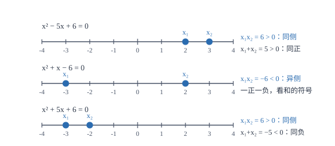

根的判别式与根与系数的关系
不解方程也能说出根的个数和两根的和与积：判别式管个数，韦达定理管和与积。
| 所属主题 | 方程与不等式 |
|---|---|
| 所属模块 | 代数 |
| 课标学段 | 第四学段（7~9 年级） |
| 前置知识 | 一元二次方程、一元二次方程 |
| 核心素养 | 运算能力推理能力 |
教材定位
人民教育出版社《人教版（2024版）义务教育教科书·数学》
九年级上册第25章 一元二次方程25.2 降次——解一元二次方程
落在九上 25.2 之下的 25.2.4「一元二次方程的根与系数的关系」；判别式 \Delta=b^2-4ac 是判断根的个数的工具。
说明
把一元二次方程 ax^2+bx+c=0\ (a≠ 0) 的求根公式拿出来看，根号内的部分是 b^2-4ac，记作 \Delta（读作 delta），叫根的判别式。因为根号内的数不能为负，\Delta 的符号直接决定了根的情况：\Delta>0 时有两个不相等的实数根；\Delta=0 时有两个相等的实数根（也叫重根）；\Delta<0 时在实数范围内没有根。判断根的情况时，只算 \Delta，不必真的解方程。
把求根公式的两个根相加、相乘，还能得到两条更省事的关系。设两根为 x_1、x_2，则 x_1+x_2=-b/a，x_1x_2=c/a。这两条叫根与系数的关系（韦达定理）。它把「两根之和、两根之积」与方程的系数直接连起来，因此在不知道根具体是多少的情况下，也能求含根的对称式的值。使用时有一个前提：方程必须有实数根，即 \Delta≥ 0。
使用场景
当题目问「方程有几个实数根」「证明方程总有两个实数根」「求使方程有两个不等实根的参数范围」时，不必解方程，只需把 \Delta 写成含参数的式子，再按 \Delta>0、\Delta=0、\Delta<0 分别讨论。这类题在含参问题里出现频率很高，也是后面「图象与方程」那类问题的代数版本。
当题目已知一根求另一根、或要求 x_1^2+x_2^2、\dfrac1x_1+\dfrac1x_2、|x_1-x_2| 这类含两根的式子的值时，用韦达定理把式子整体换成两根之和与两根之积，再代入系数。这类「不求出根却要用根」的题，正是韦达定理的用武之地。
注意点
算 \Delta 前必须先化成一般形式，并把 a、b、c 连同符号一起代入。x^2-2x-3=0 中 c=-3，所以 \Delta=(-2)^2-4× 1×(-3)=4+12=16；若把 c 当作 3 算，会得到 4-12=-8，把「有两个不等实根」误判成「无实根」。
用韦达定理前必须确认 \Delta≥ 0。含参题里经常出现「方程有两根，求某式的值」，其中参数的一部分取值会让 \Delta<0，此时根本不存在实根，算出来的「和与积」没有意义。先解 \Delta≥ 0 求出参数范围，再用韦达，顺序不能颠倒。
证明

图 1：积 x_1x_2 定两根同侧还是异侧，和 x_1+x_2 定落在哪一侧——不解方程也能定位两根
证明
结论 1判别式 \Delta=b^2-4ac 的符号决定二次方程 ax^2+bx+c=0 有两个不同的实根、两个相等的实根，还是没有实根。
判别式为什么能决定根的个数：求根公式是 x=\dfrac-b±\sqrtb^2-4ac2a，\Delta 就在根号里面。根号内的数为正，取正负两个值，得到两个不同的根；根号内恰为零，正负两种取法给出同一个值，两个根重合；根号内为负，任何实数的平方都不为负，公式给不出实数。三种情形一一对应，没有第四种。
关键一步依据是平方根的有无与取值的个数：根号内为正时 ±\sqrt\Delta 取两个不同的数，为零时两个取法重合为一个，为负时实数范围内没有平方根。而判别式就是根号里的那一个量，所以它的符号直接决定根的个数。
结论 2从图象上看，判别式的三种符号对应方程图象与 x 轴的三种交点情形。
再从图象上看一遍（这一段提前借用了后面「二次函数的图象与性质」的说法，正式学到时再回看；不看图也不影响前后两步的推导）。二次函数 y=ax^2+bx+c 的图象是一条抛物线，方程 ax^2+bx+c=0 的根就是抛物线与 x 轴交点的横坐标。抛物线的顶点在 x 轴上方且开口向上时，与 x 轴没有交点（\Delta<0）；顶点恰好落在 x 轴上时只有一个交点（\Delta=0）；顶点在 x 轴下方则穿过 x 轴两次（\Delta>0）。
关键一步依据是「方程的根就是图象与 x 轴交点的横坐标」：x 轴上的点纵坐标为 0，令函数值等于 0 即得方程；交点个数又由顶点相对 x 轴的位置决定，而顶点的位置由 \Delta 的符号决定，所以三种情形一一对应。
结论 3韦达定理之一：x_1+x_2=-b/a。
韦达定理的推导：由求根公式，x_1=\dfrac-b+\sqrt\Delta2a、x_2=\dfrac-b-\sqrt\Delta2a。两式相加，带根号的部分一正一负正好抵消，得 x_1+x_2=-2b/2a=-b/a。
关键一步依据是求根公式中 \sqrt\Delta 与 -\sqrt\Delta 恰好互为相反数、相加为零；剩下的系数部分是确定的常数，所以两根之和只由 a、b 决定，与根的具体取值无关。
结论 4韦达定理之二：x_1x_2=c/a。
两式相乘，用平方差：x_1x_2=\dfrac(-b)^2-(\sqrt\Delta)^2(2a)^2=\dfracb^2-(b^2-4ac)4a^2=\dfrac4ac4a^2=c/a。两条关系都是从求根公式算出来的，不是新定理，所以只要方程有实根就一定成立。
关键一步依据是平方差公式 (u+v)(u-v)=u^2-v^2：把 (-b+\sqrt\Delta) 与 (-b-\sqrt\Delta) 当作一对相反数式的和与差；再由 (\sqrt\Delta)^2=\Delta=b^2-4ac 代入化简。所以积也只由系数决定，两条关系都不是凭空来的。
结论 5两根之和与两根之积只与系数有关，所以「关于两根对称」的式子可以用韦达定理表示，从而绕过求根。
明白了来处，就能理解它的用处：两根之和与两根之积只与系数有关，与具体是哪两个根无关。因此凡是「关于两根对称」的式子（交换两根后式子不变），都能用 x_1+x_2 与 x_1x_2 表示，从而绕过求根。（两根在数轴上的位置怎样由和与积的符号定，见图 1）
关键一步依据是上面两式：x_1+x_2、x_1x_2 是系数的确定组合，交换两根时它们不变；因此任何交换两根后不变的式子都能写成这两个基本量的表达式，不必先把根求出来。
动手实验
取三组系数做数值检验：方程 x^2-5x+6=0 的根是 2 与 3，和 5=--5/1，积 6=6/1；方程 2x^2-3x+1=0 的根是 1 与 1/2，和 1.5=3/2，积 0.5=1/2；方程 x^2+2x+1=0 的根是两个 -1，和 -2、积 1，\Delta=0 的情形同样满足。再取 x^2+x+1=0，\Delta=1-4=-3<0，此时谈「两根之和」没有意义。
解题思路
判断根的情况走三步：化成一般形式并写出带符号的 a、b、c；算 \Delta=b^2-4ac 并化简；按 \Delta 的符号下结论。若题目含参数，把 \Delta 写成关于参数的式子，再解不等式 \Delta>0、\Delta=0 或 \Delta<0。最后一步要写清「因为 \Delta=\ldots，所以方程有……」，结论与计算要对应。
用韦达定理解题走四步：确认 \Delta≥ 0 并求出参数范围；写出 x_1+x_2=-b/a、x_1x_2=c/a；把所求的式子变形，用和与积表示——常见变形有 x_1^2+x_2^2=(x_1+x_2)^2-2x_1x_2、\dfrac1x_1+\dfrac1x_2=\dfracx_1+x_2x_1x_2、(x_1-x_2)^2=(x_1+x_2)^2-4x_1x_2；代入数值算结果。
已知一根求另一根时，有两条路：用两根之和（或积）列一个一次方程，解出另一根；或者直接把已知根代回原方程求参数，再用韦达求另一根。后者更稳，因为它不依赖「另一根存在」这个隐含前提。求出的参数要回代检查 \Delta≥ 0，若 \Delta<0 说明这个参数下方程其实没有实根，答案应舍去。
按场景的例题
例 1（场景：竞技与游戏） 不解方程判断根的个数
不解方程，判断 x^2-3x+1=0 的根的情况；再判断 x^2-2x+3=0 的根的情况。
解：第一个方程 a=1、b=-3、c=1，\Delta=(-3)^2-4× 1× 1=9-4=5>0，所以有两个不相等的实数根。第二个方程 a=1、b=-2、c=3，\Delta=(-2)^2-4× 1× 3=4-12=-8<0，所以在实数范围内没有根。注意第二个方程不能因为「看不出怎么分解」就判为无解，必须靠 \Delta 下结论。
答：x^2-3x+1=0 有两个不等实根；x^2-2x+3=0 无实数根。
例 2（场景：图形设计） 已知一根求参数与另一根
已知方程 x^2-5x+m=0 的一个根是 2，求 m 的值和另一个根。
解：把 x=2 代入：4-10+m=0，得 m=6。此时方程是 x^2-5x+6=0，\Delta=25-24=1>0，确实有两个实根。设另一根为 x_2，由两根之和 2+x_2=5 得 x_2=3；用两根之积核对：2× 3=6=m，一致。也可直接因式分解：(x-2)(x-3)=0，另一根是 3。
答：m=6，另一个根是 3。
例 3（场景：数据调查） 由两数之和与积反求这两个数
两个数的和是 7，积是 12。求这两个数；并求这两个数的平方和。
解：设这两个数为 x_1、x_2，则它们是方程 x^2-7x+12=0 的两根（因为两根之和为 7、两根之积为 12）。因式分解得 (x-3)(x-4)=0，两根是 3 与 4，即这两个数为 3 和 4。平方和用韦达定理整体计算：x_1^2+x_2^2=(x_1+x_2)^2-2x_1x_2=49-24=25，与 3^2+4^2=25 一致。
答：这两个数是 3 和 4，平方和是 25。
常用推论
常见对称式的变形要能随手写出：x_1^2+x_2^2=(x_1+x_2)^2-2x_1x_2；\dfrac1x_1+\dfrac1x_2=\dfracx_1+x_2x_1x_2；|x_1-x_2|=\sqrt(x_1+x_2)^2-4x_1x_2；(x_1+1)(x_2+1)=x_1x_2+(x_1+x_2)+1。它们共同的特点是只含「和」与「积」。
若方程的两根互为相反数，则 x_1+x_2=0，即 b=0；若两根互为倒数，则 x_1x_2=1，即 a=c；若一根为零，则 c=0。这三条把「根的特殊关系」翻译成「系数的特殊取值」，在含参题里非常省事。
二次三项式 ax^2+bx+c 能分解成两个整系数一次因式的积，一个必要条件是 \Delta 为完全平方数。例如 x^2-5x+6 的 \Delta=1=1^2，可以分解；x^2-3x+1 的 \Delta=5 不是完全平方数，在整数范围内分解不动。
易错点
错判断 x^2-2x-3=0 的根的情况时，算 \Delta=(-2)^2-4× 1× 3=4-12=-8<0，结论无实根。
为什么错把常数项 -3 当成 3 代入。c=-3 时 -4ac=-4× 1×(-3)=+12，符号弄反导致结论完全颠倒。
正确\Delta=4+12=16>0，有两个不等实根，事实上两根是 3 与 -1。
错已知方程 x^2-2x+m=0 有两根，直接用韦达定理得 x_1+x_2=2、x_1x_2=m，并代入求值，没有考虑 m 的取值。
为什么错「有两根」意味着 \Delta≥ 0，即 4-4m≥ 0、m≤ 1。若最终求出的 m>1，方程其实没有实根，此时谈两根之和与积是无意义的。
正确先由 \Delta=4-4m≥ 0 得 m≤ 1，再在这个范围内用韦达定理，最后把结果与范围核对。
错写韦达定理时写成 x_1+x_2=b/a。
为什么错漏掉了负号。由求根公式相加得的是 -b/a，两根之积才是 c/a。
正确x_1+x_2=-b/a，x_1x_2=c/a。可用 x^2-5x+6=0（根为 2、3）检验：和为 5=--5/1，正确。
直观理解
判断根的情况，可以想成一支射出的箭与地面的关系：\Delta 是箭与地面的「关系」，\Delta>0 表示穿过地面两次，\Delta=0 表示正好擦过地面，\Delta<0 表示始终在地面之上、碰不到。而韦达定理说的是另一件事：不管箭在哪里穿过地面，两个落点的「中点位置」和「到原点的距离之积」都由发射参数决定，与落点具体在哪无关。所以只要知道系数，就能算出中点与距离积，不必真的去找落点。